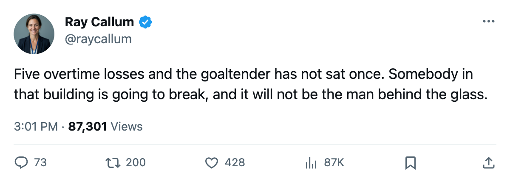
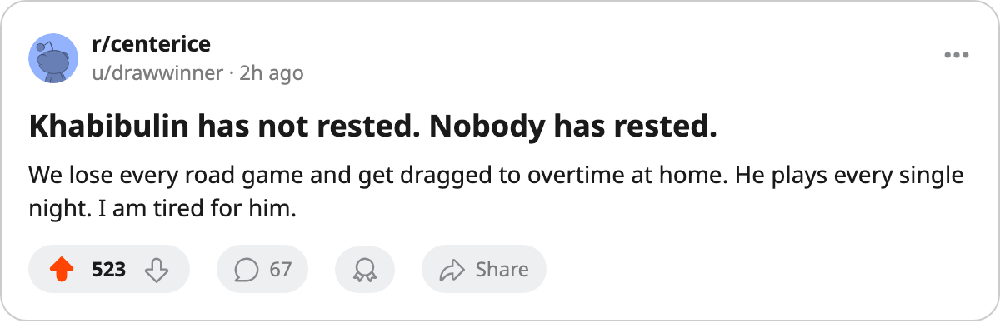

Numbers Game: Tampa Bay Is 6-1 at Home and 2-7 Everywhere Else
The widest home-away split in the league, a goaltender at 100 percent, and the most overtime losses anyone has collected.
 Ray CallumSenior correspondent · Home Ice Network
Ray CallumSenior correspondent · Home Ice Network
 Tampa Bay Lightning is the most lopsided team in the league between its own building and the rest of the world. Six wins and 1 loss at home, 2 wins and 7 losses on the road.
Tampa Bay Lightning is the most lopsided team in the league between its own building and the rest of the world. Six wins and 1 loss at home, 2 wins and 7 losses on the road.
The Lightning sit 7th in the East with 21 points through 16 games, 3 clear of 8th-place  Philadelphia Flyers. Their 49 goals for and 41 against show a club that can put the puck in the net. The road is where it falls apart.
Philadelphia Flyers. Their 49 goals for and 41 against show a club that can put the puck in the net. The road is where it falls apart.
Khabibulin has not been rested
 Khabibulin90 has played 16 of Tampa Bay Lightning's 16 games, a share at 100%. He is one of two goaltenders in the league at that mark, the other being
Khabibulin90 has played 16 of Tampa Bay Lightning's 16 games, a share at 100%. He is one of two goaltenders in the league at that mark, the other being  Cechmanek86 of
Cechmanek86 of  Los Angeles Kings at 17 of 17.
Los Angeles Kings at 17 of 17.  Grahame82 has 1 appearance.
Grahame82 has 1 appearance.
The workload compounds with the schedule. Tampa Bay Lightning carries 5 overtime losses, the most in the league. Each of those games ran 65 minutes with the same goaltender in the crease.
Tampa Bay Lightning's medical ledger tells a different story from the win-loss column. Four injury spells and 1 day lost, the lowest injury impact of any club in the league.
Tomorrow, and the Hurricanes
Tampa Bay Lightning visits  Carolina Hurricanes on 2005-11-17. The only meeting so far was a 3-2 overtime loss for the Lightning. Carolina Hurricanes sits at 4-7-2 with 16 points and a 5-6 home record. The Hurricanes carry 11 injury spells with
Carolina Hurricanes on 2005-11-17. The only meeting so far was a 3-2 overtime loss for the Lightning. Carolina Hurricanes sits at 4-7-2 with 16 points and a 5-6 home record. The Hurricanes carry 11 injury spells with  Rucchin80 out until 2005-12-19 with an elbow.
Rucchin80 out until 2005-12-19 with an elbow.
Tampa Bay Lightning won 2 straight going into tonight. The Lightning play Carolina Hurricanes on the road tomorrow, then travel to  New Jersey Devils on 2005-11-23. Two road dates against clubs with 5-3 and 5-3 home records respectively. The pattern says Tampa Bay loses one of those.
New Jersey Devils on 2005-11-23. Two road dates against clubs with 5-3 and 5-3 home records respectively. The pattern says Tampa Bay loses one of those.

